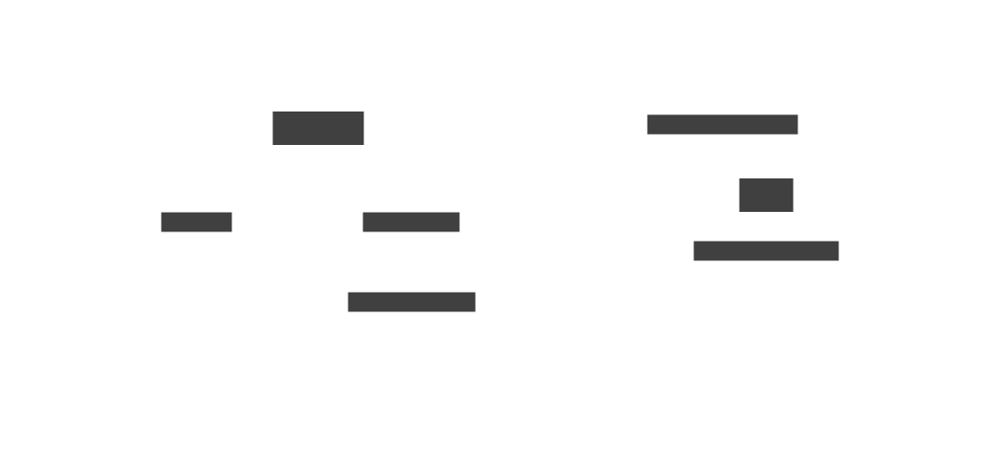
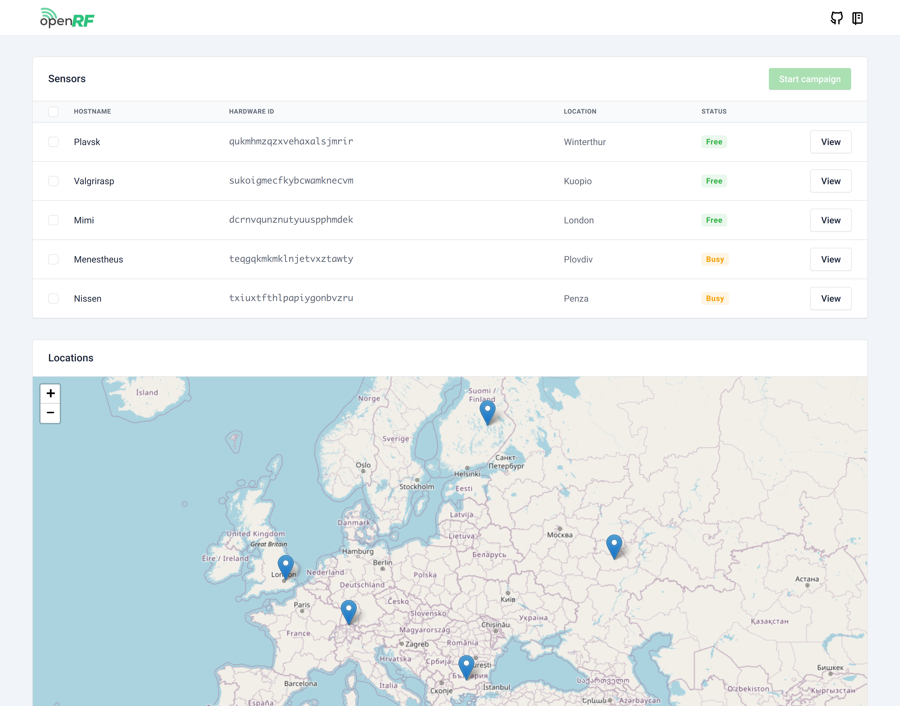
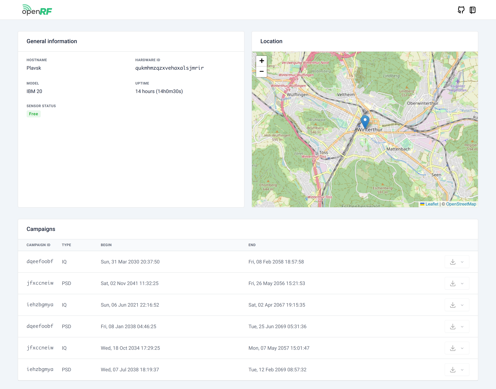
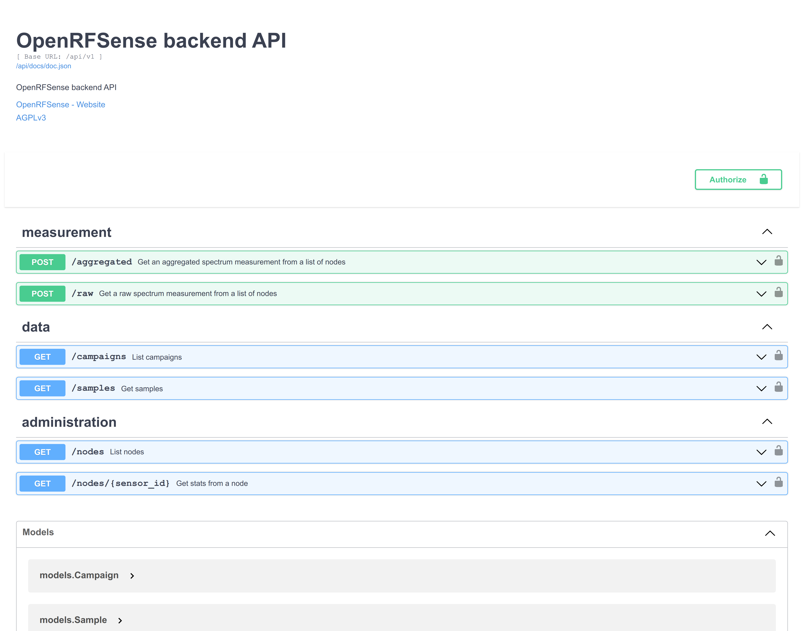
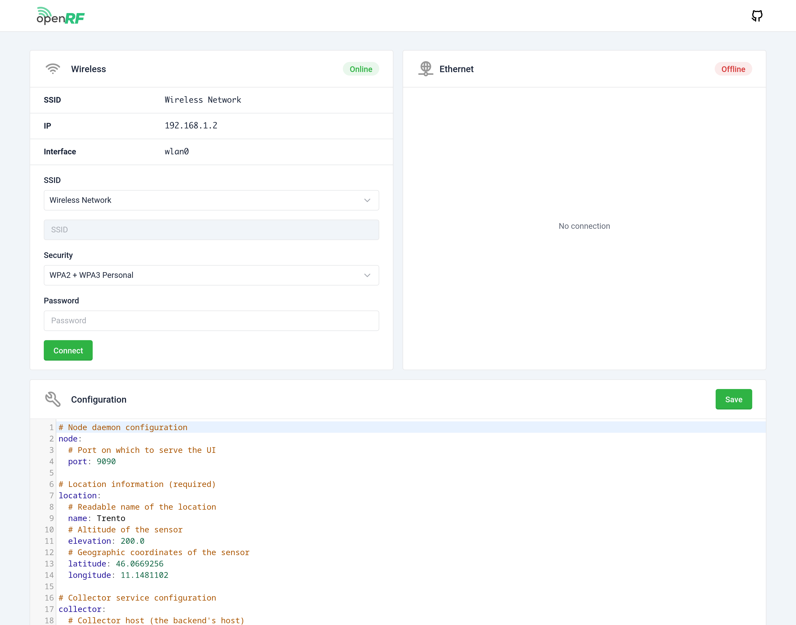

4 User interface
The user interface plays an essential role in enabling users to interact with the system effectively. A well-designed user interface can make it easy for users to navigate between pages and perform several complex tasks related to node system and data management.
The UI is served to the user as a collection of web pages by the backend service. The pages are generated on demand with up-to-date information and take advantage of modern web technologies.
4.1 Design principles
Several design principles guided the development of the user interface, mainly:
- Consistency: Elements such as fonts, colors, and icons are consistent throughout the interface, making it easier for users to navigate between UI sections and use the system.
- Simplicity: The user interface is simple and easy to use. The simplicity principle ensures that the interface is not cluttered with unnecessary elements, making it easy for users to find what they need.
- Feedback: The user interface provides users with immediate feedback to let them know that their actions have been registered. This principle ensures that users are not left wondering whether their actions have been successful.
- Accessibility: The user interface is designed to be accessible to all users, including those with disabilities. This principle ensures that users with different abilities can use the system without encountering any usability barriers.
4.2 Interface components and structure
The UI is aimed at users with a certain technical background and previous knowledge of the system, but it is designed to be easily navigated through by any given user.

4.2.1 Dashboard
The dashboard acts as the homepage of the UI. It is the first page served by the backend on the root address and is the first interactive element the user will be shown on connection to the system.

The first element presented by the UI is a table containing useful information about all nodes connected to the backend, such as node location and unique identifier. Each node can be selected with a checkbox to take part in a measurement campaign (configurable through a pop-up modal dialog). Every row also contains a link to a page which visualizes a node’s metrics and location in more detail (see Section 4.2.2).
The homepage of the UI provides a map of the world, with the locations of all the sensors in the OpenRFSense network indicated by markers. Clicking on the markers yields basic information about each node, such as its ID and the last time it was active, and a link the node-specific overview page.
4.2.2 Node overview page
A node-specific overview page is also generated for each node connected to the backend and the messaging system. This page generally contains all required node metrics returned by a request to the node, as well as more detailed node system information if available (see Section 3.1). The node overview page also contains a map but only showing a single marker corresponding to the node being queried and centered on the node’s location, if provided.

A table containing a list of all past and ongoing measurement campaigns is also provided to the user, with management controls on each row to download the signal data in various formats or delete it from the storage. The controls are non-interactive if the campaign is still ongoing.
4.2.3 API documentation
To make the REST API (defined in Section 2.2.1) easily accessible to users and external applications, a documentation page is automatically generated using Swagger (OpenAPI specification version 2.0 (“OpenAPI Specification - Version 2.0 | Swagger,” n.d.)). The generated page contains all the necessary documentation to query data and send commands to the backend, complete with examples and request and response formats in textual JSON.

4.2.4 Node system interface
Each node’s local management UI provides a high-level management over the host system running the node. As such, it must present important information in logical order, starting with connection status (both WiFi and physical). On remote devices, this facilitates troubleshooting and provides an alternative method of restoring connection to a node.

A simple text editor is also provided for the node management software configuration. Each change followed by a click on the “Save” button will write the changes to the configuration file and reboot the system.